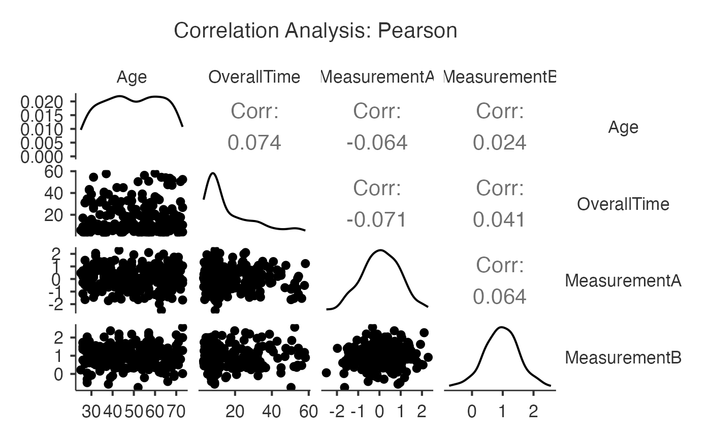
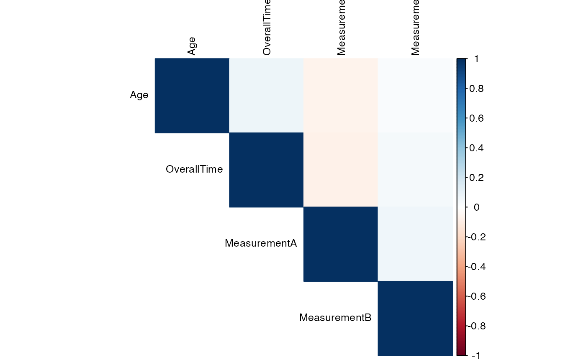
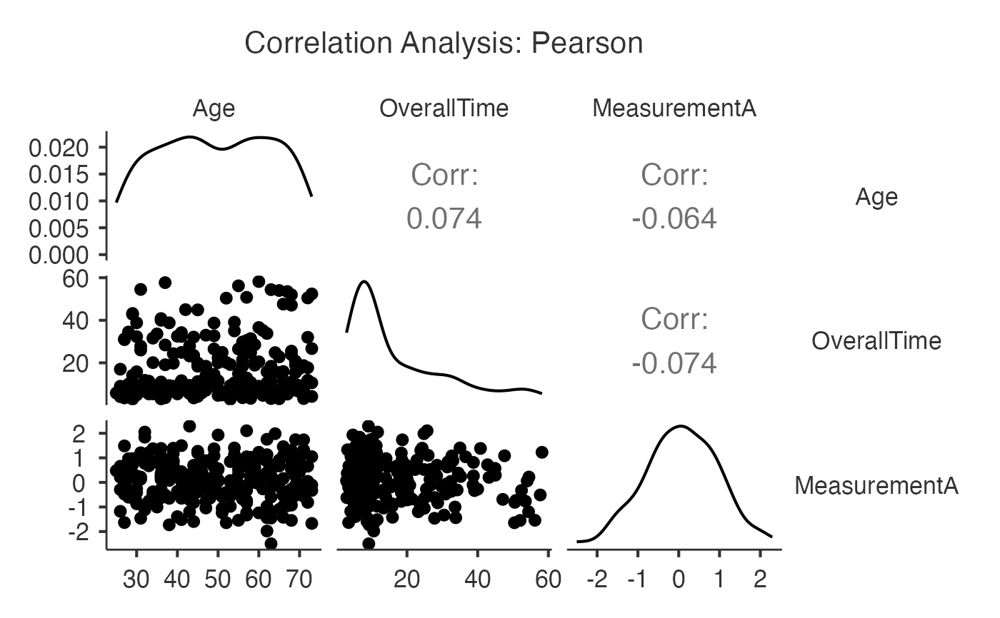
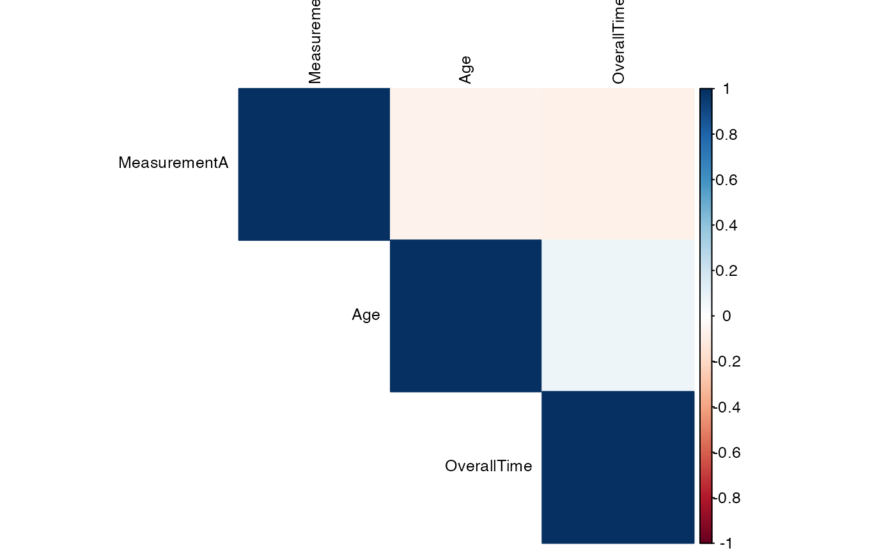

Comprehensive correlation analysis including Pearson, Spearman, and Kendall correlations with significance tests, confidence intervals, and natural language reporting. Suitable for exploring relationships between continuous variables.
Usage
jcorrelation(
data,
vars,
group = NULL,
method = "pearson",
alternative = "two.sided",
ci = TRUE,
ciWidth = 95,
flag = TRUE,
flagAlpha = 0.05,
plots = TRUE,
plotType = "matrix",
report = TRUE
)Arguments
- data
The data as a data frame.
- vars
A vector of strings naming the variables to correlate.
- group
Variable to split the analysis by.
- method
The correlation method to use: 'pearson' (default), 'spearman', or 'kendall'.
- alternative
The alternative hypothesis: 'two.sided' (default), 'greater', or 'less'.
- ci
TRUE (default) or FALSE, provide confidence intervals.
- ciWidth
Confidence interval level (default: 95 percent).
- flag
TRUE (default) or FALSE, flag significant correlations.
- flagAlpha
Alpha level for flagging significant correlations (default: 0.05).
- plots
TRUE (default) or FALSE, provide correlation plots.
- plotType
Type of correlation plot: 'matrix' (default), 'pairs', or 'network'.
- report
TRUE (default) or FALSE, provide natural language interpretation.
Value
A results object containing:
results$matrix | correlation matrix with significance tests | ||||
results$tests | detailed correlation tests for each pair of variables | ||||
results$summary | summary of correlation analysis | ||||
results$report | a html | ||||
results$plot | an image | ||||
results$plotMatrix | an image | ||||
results$plotPairs | an image | ||||
results$plotNetwork | an image |
Tables can be converted to data frames with asDF or as.data.frame. For example:
results$matrix$asDF
as.data.frame(results$matrix)
Examples
# \donttest{
# Basic correlation analysis
jcorrelation(
data = histopathology,
vars = c("Age", "OverallTime", "MeasurementA", "MeasurementB")
)
#>
#> CORRELATION ANALYSIS
#>
#> Correlation Matrix
#> ──────────────────────────────────────────────────────────────────────────────
#> Variable Age OverallTime MeasurementA MeasurementB
#> ──────────────────────────────────────────────────────────────────────────────
#> Age — 0.07400000 -0.06400000 0.02400000
#> OverallTime 0.07400000 — -0.07100000 0.04100000
#> MeasurementA -0.06400000 -0.07100000 — 0.06400000
#> MeasurementB 0.02400000 0.04100000 0.06400000 —
#> ──────────────────────────────────────────────────────────────────────────────
#>
#>
#> Pairwise Correlations
#> ──────────────────────────────────────────────────────────────────────────────────────────────────────────────────
#> Variable 1 Variable 2 r p t df Lower Upper N
#> ──────────────────────────────────────────────────────────────────────────────────────────────────────────────────
#> Age OverallTime 0.0738587 0.2474876 1.1592384 245 -0.0514349 0.1968633 247
#> Age MeasurementA -0.0642835 0.3143138 -1.0082821 245 -0.1875978 0.0610256 247
#> Age MeasurementB 0.0243251 0.7036367 0.3808606 245 -0.1008004 0.1486931 247
#> OverallTime MeasurementA -0.0710284 0.2661204 -1.1145852 245 -0.1941268 0.0542723 247
#> OverallTime MeasurementB 0.0413609 0.5176205 0.6479555 245 -0.0838916 0.1653269 247
#> MeasurementA MeasurementB 0.0636621 0.3190243 0.9984956 245 -0.0616472 0.1869957 247
#> ──────────────────────────────────────────────────────────────────────────────────────────────────────────────────
#>
#>
#> Summary Statistics
#> ────────────────────────────────────────
#> Statistic Value
#> ────────────────────────────────────────
#> Number of variables 4.0000000
#> Number of correlations 6.0000000
#> Mean correlation 0.0113158
#> Median correlation 0.0328430
#> Min correlation -0.0710284
#> Max correlation 0.0738587
#> SD correlation 0.0635917
#> ────────────────────────────────────────
#>
#>
#> <div style='background-color: #f8f9fa; padding: 15px; border-radius:
#> 5px; margin: 10px 0;'><h4 style='color: #495057; margin-top:
#> 0;'>Correlation Analysis Summary
#>
#> Pearson's correlation analysis was performed on 4 variables with 247
#> complete observations. Out of 6 pairwise correlations, 0 (0%) were
#> statistically significant at α = 0.05.


# With grouping variable
jcorrelation(
data = histopathology,
vars = c("Age", "OverallTime", "MeasurementA"),
group = "Sex"
)
#>
#> CORRELATION ANALYSIS
#>
#> Correlation Matrix
#> ──────────────────────────────────────────────────────────────
#> Variable Age OverallTime MeasurementA
#> ──────────────────────────────────────────────────────────────
#> Age — 0.07400000 -0.06400000
#> OverallTime 0.07400000 — -0.07400000
#> MeasurementA -0.06400000 -0.07400000 —
#> ──────────────────────────────────────────────────────────────
#>
#>
#> Pairwise Correlations
#> ─────────────────────────────────────────────────────────────────────────────────────────────────────────────────
#> Variable 1 Variable 2 r p t df Lower Upper N
#> ─────────────────────────────────────────────────────────────────────────────────────────────────────────────────
#> Age OverallTime 0.0739423 0.2479207 1.1581856 244 -0.0516084 0.1971920 246
#> Age MeasurementA -0.0644296 0.3142050 -1.0085179 244 -0.1879881 0.0611364 246
#> OverallTime MeasurementA -0.0743838 0.2451003 -1.1651394 244 -0.1976186 0.0511656 246
#> ─────────────────────────────────────────────────────────────────────────────────────────────────────────────────
#>
#>
#> Summary Statistics
#> ────────────────────────────────────────
#> Statistic Value
#> ────────────────────────────────────────
#> Number of variables 3.0000000
#> Number of correlations 3.0000000
#> Mean correlation -0.0216237
#> Median correlation -0.0644296
#> Min correlation -0.0743838
#> Max correlation 0.0739423
#> SD correlation 0.0829121
#> ────────────────────────────────────────
#>
#>
#> <div style='background-color: #f8f9fa; padding: 15px; border-radius:
#> 5px; margin: 10px 0;'><h4 style='color: #495057; margin-top:
#> 0;'>Correlation Analysis Summary
#>
#> Pearson's correlation analysis was performed on 3 variables with 246
#> complete observations. Out of 3 pairwise correlations, 0 (0%) were
#> statistically significant at α = 0.05.


# }